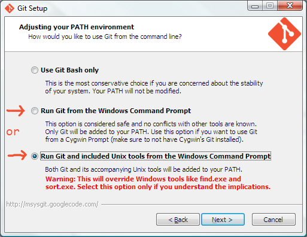
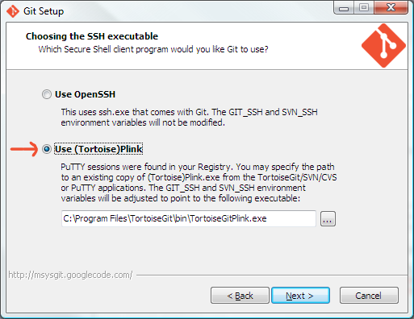
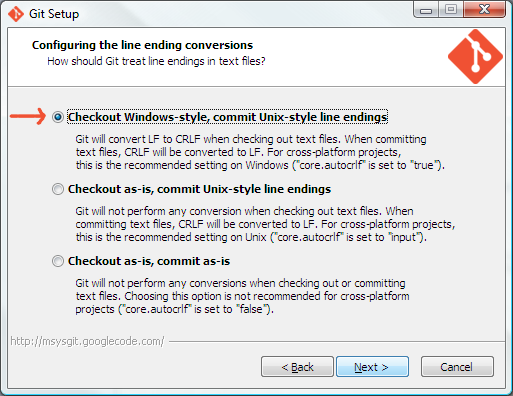
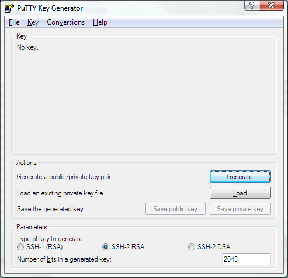

Git setup - Duplo Media
Basic setup
Download
and install Git for your platform




Download
and install PuTTY, if necessary
Run PuTTYgen to create or import your SSH key


Add the SSH key to your Springloops account
log into Springloops
and open your profile page
click "edit" (top right
of the page)
click "Profile details"
in the top left menu
scroll down to SSH Public Key,
and click "Manage"
click "Add a new SSH key"
paste in your key, and click "Create this new key"
Optional Download
and install TortoiseGIT (Optional)
Alternatively: Atlassian
Sourcetree
Mac OS X only : Tower
Git has built-in support for Git-flow
Git-flow setup (Windows)
download libiconv2.dll,
libintl3.dll and getopt.exe from the util-linux-ng package, and
place them all in the Git bin folder (typically "C:\Program
Files (x86)\Git\bin")
Open a Command Prompt as Administrator (right-click > Run
as Administrator), and clone the git-flow repo.
git clone --recursive https://github.com/nvie/gitflow.git
Install git-flow extension
cd gitflow
contrib\msysgit-install.cmd "C:\Program Files (x86)\Git"
(change path above to the path where you installed Git)
Clone the easyad2 repo from Springloops:
Open a Command Prompt, and navigate to the root of your work
folder
git clone ssh://sls@slsapp.com:1234/duplo/easyad2.git easyad
OR
- 6. Go to your localhost root folder, right click and choose Git clone...
- 6.1 Enter repo url ssh://sls@slsapp.com:1234/duplo/easyad2.git
- 6.2 Set local folder (change easyad2 to easyad)
- 6.3 Load puttykey and find the key you generated in step 3.
- 6.4 Click Ok, enter your ssh key passprase if prompted.
- 6.5 Click Yes/Ja if prompted.
- 6.6 Go to 7 while waiting
Initialize as git-flow repository
cd easyad
git flow init
Hit <Enter> at each prompt to accept defaults
Done!
Links